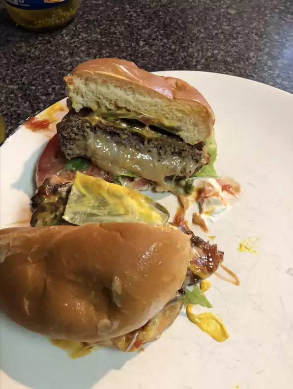

The All American Burger!

Description
Imagine being at a cookout. Coolers with drinks, music playing, smoke is puffing out of the grill with the scent of delicious meats being cooked. What are you
grabbing for your first plate? How about a delicious All American Burger!
Ingredients
This is all relative, because you really just need ground beef and good ole American cheese. I will provide a list below, but feel free to customize!
- 1.5lb of ground beef (80/20 is best for maximum flavor)
- 3/4 teaspoon of garlic salt
- 1 teaspoon black pepper
- 1 teaspoon of salt
- 1/2 cup of bread crumbs
- 4 slices American cheese
- Hamburger buns
Steps
Note: If you want a more well done burger, cook for 4 minutes each side instead of 3.
- Turn on grill and set to medium heat and close the lid. Combine beef, garlic salt, black pepper, salt, and bread crumbs in a large bowl and mix thouroghly
- Form the beef into 4 equal size patties
- Place the beef patties on the now heated grill and close the lid
- Let the patties cook for about 3 minutes, flip the patties over, and close the lid
- Allow the patties to continue cooking for 3 minutes
- Open the lid and place 1 slice of American cheese per patty, then close the lid and turn off the grill if there are no other items to cook
- After 30 seconds, remove the patties from the grill and place onto your bun.
- Top it with your favorite condiments and enjoy!